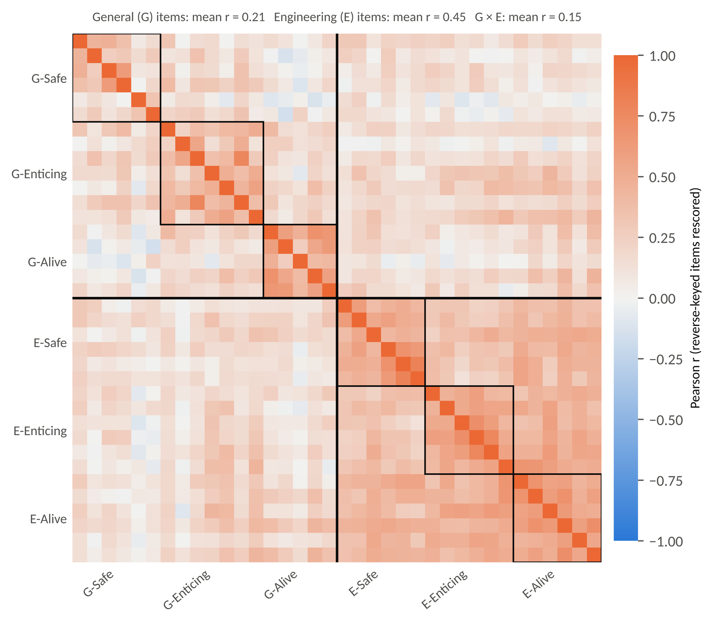
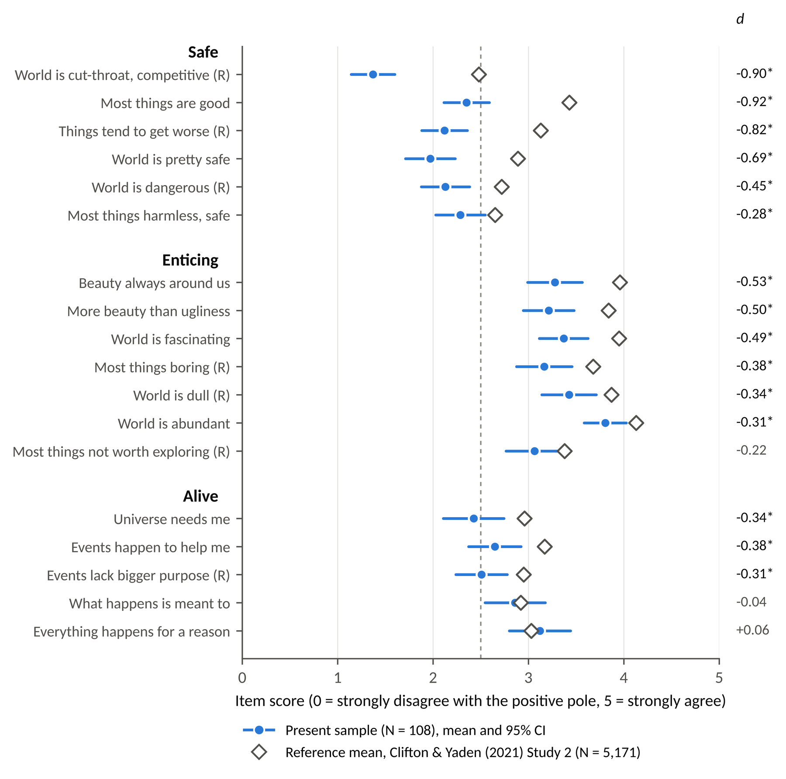
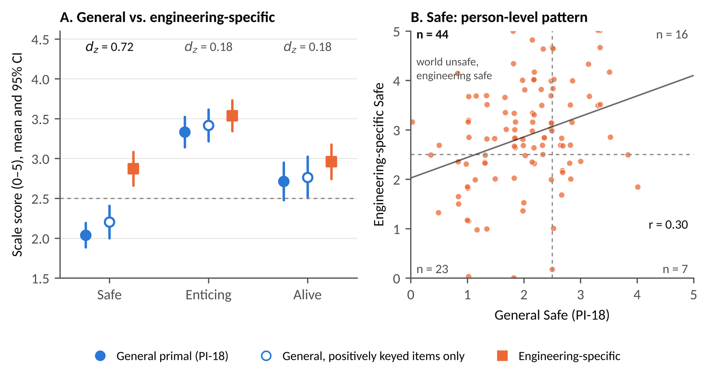
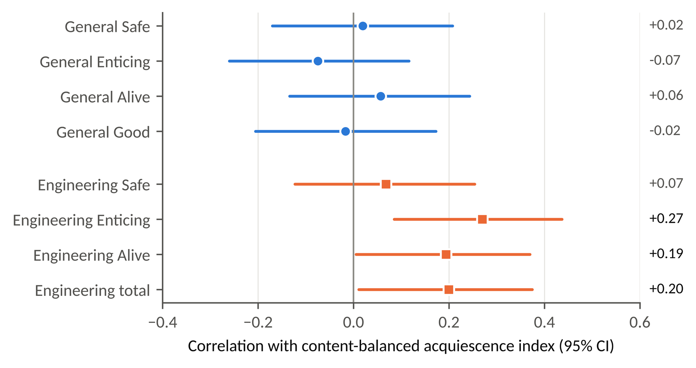
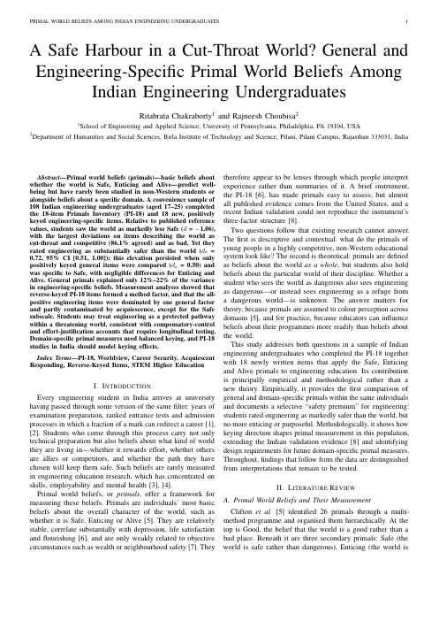

Abstract
Primal world beliefs (primals), people's most basic beliefs about whether the world is Safe, Enticing and Alive, predict well-being but have rarely been studied in non-Western students or alongside beliefs about a specific domain. A convenience sample of 108 Indian engineering undergraduates (aged 17–25) completed the 18-item Primals Inventory (PI-18) and 18 new, positively keyed engineering-specific items. Relative to published reference values, students saw the world as markedly less Safe (d = −1.06), with the largest deviations on items describing the world as cut-throat and competitive (86.1% agreed) and as bad. Yet they rated engineering as substantially safer than the world (dz = 0.72, 95% CI [0.51, 1.00]); this elevation persisted when only positively keyed general items were compared (dz = 0.50) and was specific to Safe, with negligible differences for Enticing and Alive. General primals explained only 12%–22% of the variance in engineering-specific beliefs. Measurement analyses showed that reverse-keyed PI-18 items formed a method factor, and that the all-positive engineering items were dominated by one general factor and partly contaminated by acquiescence, except for the Safe subscale. Students may treat engineering as a protected pathway within a threatening world, consistent with compensatory-control and effort-justification accounts that require longitudinal testing. Domain-specific primal measures need balanced keying, and PI-18 studies in India should model keying effects.
Keywords: PI-18, Worldview, Career Security, Acquiescent Responding, Reverse-Keyed Items, STEM Higher Education
Key results
Findings
- A cut-throat world. Students' general primals were below reference values on every scale, most of all on Safe, driven by agreement that the world is competitive and getting worse.
- A safety premium for engineering. Students rated engineering as markedly safer than the world. The gap held under a keying-matched comparison and was specific to Safe. Engineering was not seen as more enticing or purposeful than the world.
- Loose coupling. General primals explained only 12%–22% of the variance in engineering-specific beliefs, which favours differentiation over a simple top-down “lens” account.
- Keying matters. Reverse-keyed PI-18 items formed a method factor. The all-positive engineering items were dominated by a general factor and partly inflated by acquiescence, except the Safe subscale.
Try the Questionnaire
Answer the 18 statements below, then see how your scores compare with the 108 engineering undergraduates in this study. Switch between the general version (PI-18) and the engineering-specific version (EPB-18); each is scored and compared with its own average. Your answers stay in your browser and are never stored or sent anywhere.
For interest only; this is not a clinical or diagnostic tool. Items are scored 0–5, with seven PI-18 items reverse-scored, exactly as in the paper. The general items are the Primals Inventory (PI-18) by Clifton and Yaden (2021); the engineering items (EPB-18) were written for this study. Averages come from 108 Indian engineering undergraduates surveyed in October 2024, so they describe that group, not people in general. The published reference means for the general version come from a US online adult sample (N = 5,171).
Figures




Paper, data & code

- Full paper (PDF), including supplementary material: EPB-18 item wording, item-level results, sensitivity analysis and codebook.
- De-identified data (N = 108; state recoded to region, time stamps removed).
- Analysis code. A fixed bootstrap seed reproduces every reported statistic.
- LaTeX source
Citation
@misc{chakraborty2026safeharbour,
title = {A Safe Harbour in a Cut-Throat World? General and Engineering-Specific
Primal World Beliefs Among Indian Engineering Undergraduates},
author = {Chakraborty, Ritabrata},
year = {2026},
note = {Preprint},
url = {https://ritabrata-chakraborty.github.io/Primal-World-Beliefs-Engineering/}
}